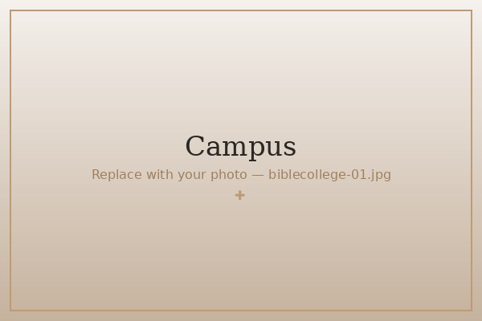
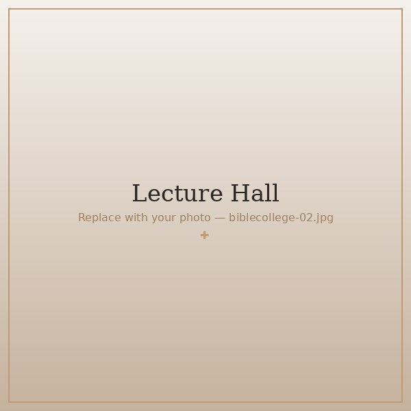
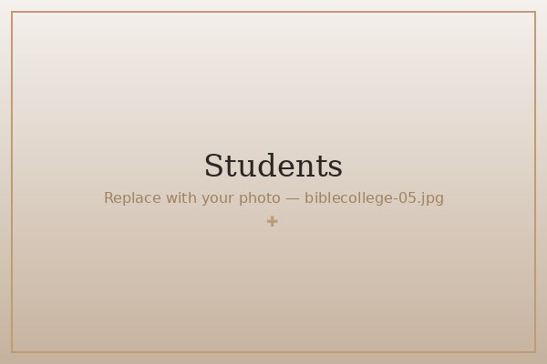
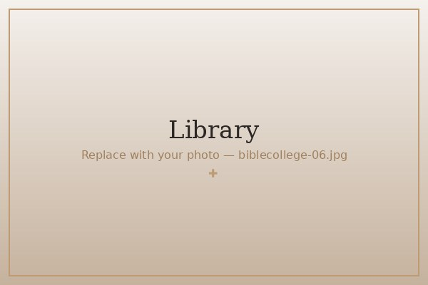
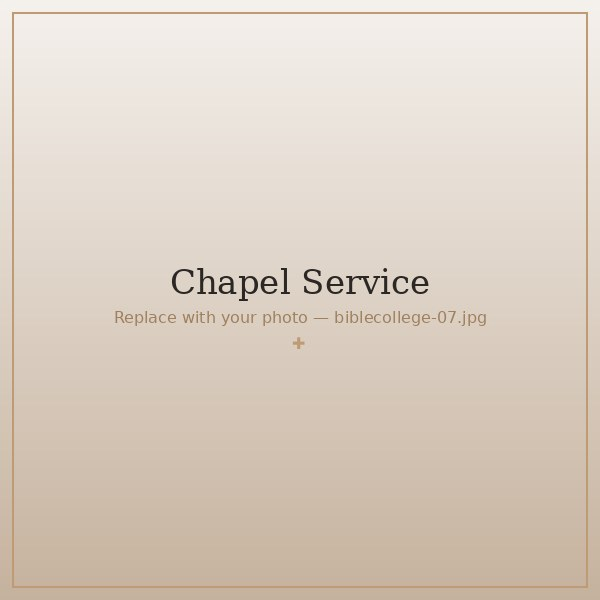
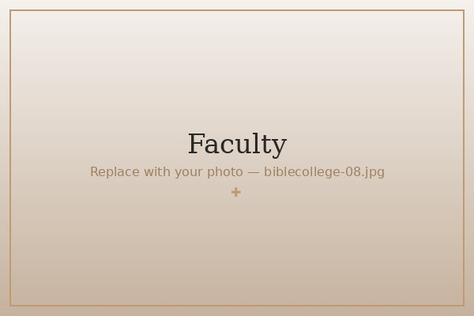
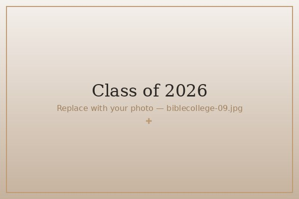
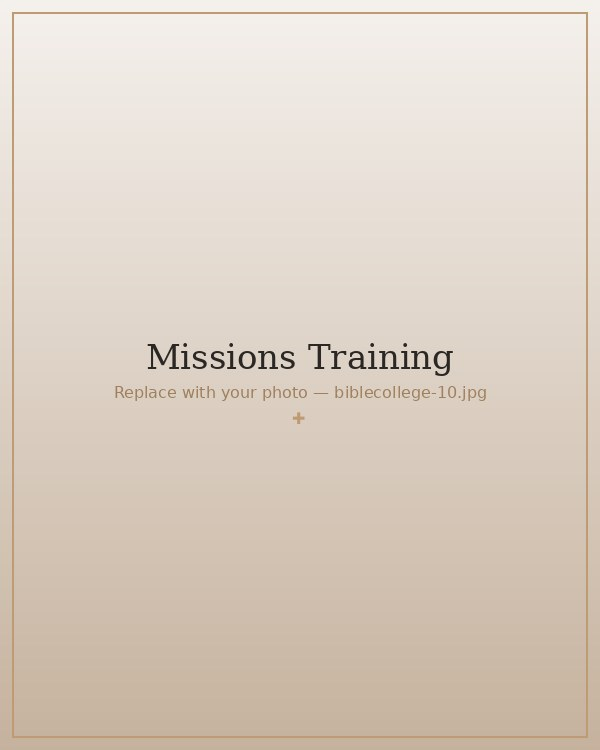
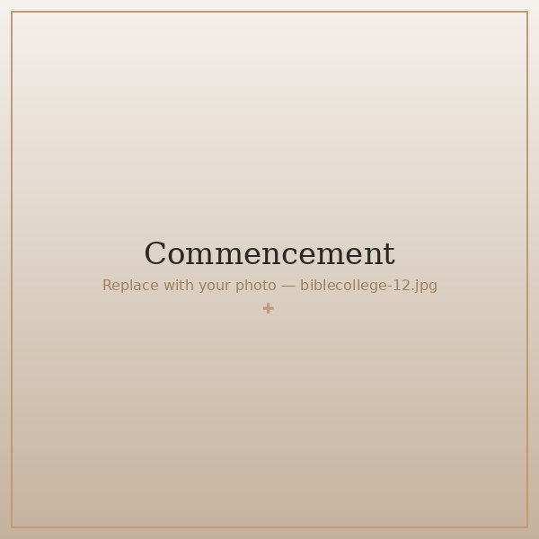

Gateway International Bible College
Gateway International Bible College exists to equip believers for life and ministry through the faithful study of God's Word.
Rooted in Scripture and led by seasoned ministers, Gateway International Bible College provides practical, Spirit-filled training for those who desire to grow deeper in their faith, discover their calling, and serve effectively in the local church and beyond. Coursework combines sound biblical teaching with hands-on ministry preparation, so students don't just learn the Word — they live it.
Whether you are taking your first steps in structured Bible study or preparing for a lifetime of ministry, there is a place for you. Students of all ages and backgrounds study together in an atmosphere of worship, prayer, and genuine community.
For enrollment information, class schedules, and upcoming semesters, contact us — we would love to help you get started.
Study to shew thyself approved unto God, a workman that needeth not to be ashamed.2 Timothy 2:15
Life at Gateway








